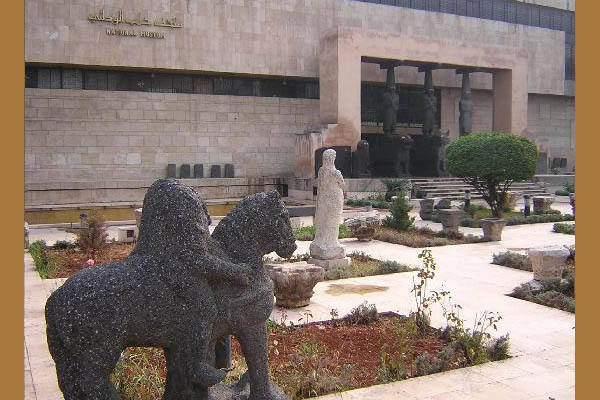

|
|
|
|
|
Musée National d'AlepLe Musée National d’Alep conserve, comme celui de Damas, d’importantes collections relevant de plusieurs périodes de l'histoire de la Syrie, de la préhistoire à l’islam,
avec une forte proportion d’objets datant de l'Âge du fer et de la période classique,
mais aussi beaucoup d'autres datant du Bronze récent. Il conserve aussi de nombreux vestiges provenant des sites archéologiques de la Djéziré,
entre Euphrate et Tigre (Tell Brak, Tell Chagar Bazar, etc.) et envoyés à Alep quand n’existait pas encore le musée de Deir ez-Zor.
Se trouve également au Musée d’Alep une petite sélection des milliers de tablettes cunéiformes qui ont été retrouvées à Mari (Moyen Euphrate)
et qui datent du début du IIe millénaire BC. La section médiane du hall arrière du musée est consacrée à deux sites du nord de la Syrie: Tell Hajib et Arslan Tash. Le dernière section expose les découvertes faites à Tell Ahmar (Til Barsip), site fouillé par le Français au cours des années 1920. La grande galerie qui court le long du troisième côté du bâtiment héberge les découvertes faites sur plusieurs sites, incluant Ebla et Ain Dara. Le premier étage du musée présente de nombreux objets trouvés pendant les fouilles de sauvetage réalisées dans les années 1970 par de nombreuses missions internationales, dans la région aujourd’hui inondée du Lac Assad sur l'Euphrate. Le musée conserve aussi les textes cunéiformes qui ont été retrouvés en plus petit nombre sur plusieurs sites de la région (Tell Hadidi, Tell el-Qitar, Tell Frey, Neirab, Umm el-Mara, etc.) Un clic ici permet d'obtenir la présentation d'une sélection de tablettes cunéiformes récemment numérisées, qui datent de l’époque de la IIIe dynastie d’Ur (Ur III, ca. 2000 BC), proviennent du pays de Sumer (Irak du sud) et sont conservées parmi les collections du musée d’Alep. |
Arabic English Tablettes du Musée National d'Alep, par période: Ebla (ca. 2400-2350 BC) Old Akkadian (ca. 2350-2200 BC) Ur III period (ca. 2100-2000 BC) Early Old Babylonian (ca. 2000-1800 BC) Middle Babylonian (ca. 1400-1100 BC) Middle Assyrian (ca. 1400-1000 BC) Tablettes du Musée national d'Alep, par genre: Administrative texts Literary texts Legal texts Letters Lexical texts Royal/Monumental texts Uncertain Tablettes du Musée national d'Alep, par site: Djebel Arouda Drehem Neirab Tell Ahmar / Til Barsip Tell Bazi / Baṣiru Tell Brak / Nagar Tell Chagar Bazar / Ashnakkum Tell Chioukh Faouqani / Burmarina Tell el-Qitar / Til Abnu Tell Fray Tell Hadidi / Azu Tell Hariri / Mari Tell Mardikh / Ebla Tell Mishrife / Qatna Tell Meskene / Emar Ras Shamra / Ugarit Umm el-Marra Umma Chercher toutes les inscriptions du CDLI |